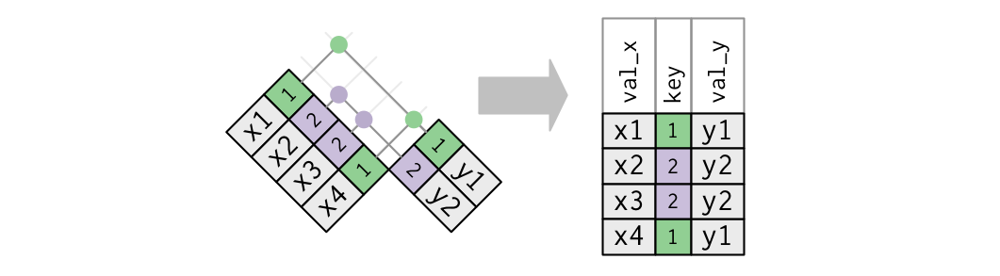
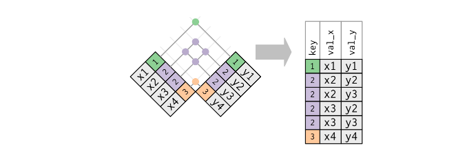

g3 <- tibble(sid = 1:3,
grade = rep(3, 3),
score = as.integer(rnorm(3, 200, 10)))
g4 <- tibble(sid = 9:11,
grade = rep(4, 3),
score = as.integer(rnorm(3, 200, 10)))Week 7: Mutating Joins
Mutating Joins
Week 7
Celebrate yourself!
Agenda
bind_rows()*_join()
Overall Purpose
- Understand and be able to identify keys
- Understand different types of mutating joins
left_join()right_join()- one-to-one
- one-to-many
- Understand some ways joins fail
A bit about joins
- Also data “merge”
- Today we’ll talk about mutating joins
- Mutating joins add columns to a dataset
- Mutating joins are the most common, but filtering joins can be very powerful
. . .
What if I want to add rows?
- Not technically a join (no key involved)
- Let’s take a look
Binding rows
g3# A tibble: 3 × 3
sid grade score
<int> <dbl> <int>
1 1 3 200
2 2 3 201
3 3 3 203g4# A tibble: 3 × 3
sid grade score
<int> <dbl> <int>
1 9 4 201
2 10 4 193
3 11 4 204bind_rows()
- In examples like the previous data sets, we just want to combine the data by stacking the rows
- Data have same (or approximately same) columns
- We can do so with
bind_rows()
# output-location: fragment
bind_rows(g3, g4)# A tibble: 6 × 3
sid grade score
<int> <dbl> <int>
1 1 3 200
2 2 3 201
3 3 3 203
4 9 4 201
5 10 4 193
6 11 4 204dplyr::bind_rows()
- an efficient way to bind many data frames into one, by stacking rows
- can bind multiple datasets
one <- mtcars[1:4, ]
two <- mtcars[6:10, ]
three <- mtcars[12:14, ]
bind_rows(one, two, three)- like joining (merging) data frames that have the same columns
- columns don’t need to match when row-binding
Optional .id argument
- What if we knew the grade, but didn’t have a variable in each dataset already?
- Use
.idto add an index for each dataset
bind_rows(select(g3, -grade), select(g4, -grade), .id = "dataset")# A tibble: 6 × 3
dataset sid score
<chr> <int> <int>
1 1 1 200
2 1 2 201
3 1 3 203
4 2 9 201
5 2 10 193
6 2 11 204Recode .id column
bind_rows(select(g3, -grade), select(g4, -grade), .id = "dataset") %>%
mutate(grade = ifelse(dataset == 1, 3, 4))# A tibble: 6 × 4
dataset sid score grade
<chr> <int> <int> <dbl>
1 1 1 200 3
2 1 2 201 3
3 1 3 203 3
4 2 9 201 4
5 2 10 193 4
6 2 11 204 4Even better
bind_rows(select(g3, -grade), select(g4, -grade), .id = "grade") %>%
mutate(grade = ifelse(grade == 1, 3, 4))# A tibble: 6 × 3
grade sid score
<dbl> <int> <int>
1 3 1 200
2 3 2 201
3 3 3 203
4 4 9 201
5 4 10 193
6 4 11 204What if columns don’t match exactly?
Pads with NA
bind_rows(g3, g4[ ,-2], .id = "dataset")# A tibble: 6 × 4
dataset sid grade score
<chr> <int> <dbl> <int>
1 1 1 3 200
2 1 2 3 201
3 1 3 3 203
4 2 9 NA 201
5 2 10 NA 193
6 2 11 NA 204You can also bind_cols()
read <- tibble(sid = 1:3,
read = as.integer(rnorm(3, 200,10)))
math <- tibble(math = as.integer(rnorm(3, 200,10)))::: {.column width = 50%}
read# A tibble: 3 × 2
sid read
<int> <int>
1 1 204
2 2 206
3 3 214::: {.column width = 50%}
math# A tibble: 3 × 1
math
<int>
1 205
2 197
3 202:::
::::
bind_cols()
bind_cols(read, math)# A tibble: 3 × 3
sid read math
<int> <int> <int>
1 1 204 205
2 2 206 197
3 3 214 202Joins
(not to be confused with row binding)
Keys
- Uniquely identify rows in a dataset
. . .
- Variable(s) in common between two datasets to be joined
- A key can be more than one variable
. . .
Types of keys
- Small distinction that you probably won’t have to worry about much, but is worth mentioning:
- Primary keys: uniquely identify observations in their dataset
- Foreign keys: uniquely identify observations in other datasets
What’s the primary key here?
First, let’s break down the code:
library(rio)
library(here)
ecls <- import(here("data", "ecls-k_samp.sav")) %>%
as_tibble() %>%
characterize(). . .
# A tibble: 984 × 33
child_id teacher_id school_id k_type school_type sex ethnic famtype numsibs
<chr> <chr> <chr> <chr> <chr> <chr> <chr> <chr> <dbl>
1 0842021C 0842T02 0842 full-… public male BLACK… BIOLOG… 1
2 0905002C 0905T01 0905 full-… private male ASIAN BIOLOG… 1
3 0150012C 0150T01 0150 full-… private fema… BLACK… BIOLOG… 4
4 0556009C 0556T01 0556 full-… private fema… HISPA… BIOLOG… 0
5 0089013C 0089T04 0089 full-… public male WHITE… BIOLOG… 4
6 1217001C 1217T13 1217 half-… public fema… NATIV… BIOLOG… 0
7 1092008C 1092T01 1092 half-… public fema… HISPA… BIOLOG… 2
8 0083007C 0083T16 0083 full-… public male WHITE… BIOLOG… 1
9 1091005C 1091T02 1091 half-… private male WHITE… BIOLOG… 0
10 2006006C 2006T01 2006 full-… private male WHITE… BIOLOG… 1
# ℹ 974 more rows
# ℹ 24 more variables: SES_cont <dbl>, SES_cat <chr>, age <dbl>,
# T1RSCALE <dbl>, T1MSCALE <dbl>, T1GSCALE <dbl>, T2RSCALE <dbl>,
# T2MSCALE <dbl>, T2GSCALE <dbl>, IRTreadgain <dbl>, IRTmathgain <dbl>,
# IRTgkgain <dbl>, T1ARSLIT <dbl>, T1ARSMAT <dbl>, T1ARSGEN <dbl>,
# T2ARSLIT <dbl>, T2ARSMAT <dbl>, T2ARSGEN <dbl>, ARSlitgain <dbl>,
# ARSmathgain <dbl>, ARSgkgain <dbl>, testdate1 <date>, testdate2 <date>, …Let’s verify the key
ecls %>%
count(child_id)# A tibble: 984 × 2
child_id n
<chr> <int>
1 0001010C 1
2 0002010C 1
3 0009005C 1
4 0009014C 1
5 0009026C 1
6 0013003C 1
7 0016004C 1
8 0016009C 1
9 0022005C 1
10 0022014C 1
# ℹ 974 more rowsLet’s verify the key
ecls %>%
count(child_id) %>%
arrange(desc(n)) %>%
slice(1:3)# A tibble: 3 × 2
child_id n
<chr> <int>
1 0001010C 1
2 0002010C 1
3 0009005C 1OR
ecls %>%
count(child_id) %>%
filter(n > 1)# A tibble: 0 × 2
# ℹ 2 variables: child_id <chr>, n <int>What about the key here?
income_ineq <- read_csv(here("data", "incomeInequality_tidy.csv"))
head(income_ineq, n = 15)# A tibble: 15 × 6
Year Number.thousands realGDPperCap PopulationK percentile income
<dbl> <dbl> <dbl> <dbl> <dbl> <dbl>
1 1947 37237 14117. 144126 20 14243
2 1947 37237 14117. 144126 40 22984
3 1947 37237 14117. 144126 60 31166
4 1947 37237 14117. 144126 80 44223
5 1947 37237 14117. 144126 50 26764.
6 1947 37237 14117. 144126 90 41477
7 1947 37237 14117. 144126 95 54172
8 1947 37237 14117. 144126 99 134415
9 1947 37237 14117. 144126 99.5 203001
10 1947 37237 14117. 144126 99.9 479022
11 1947 37237 14117. 144126 100. 1584506
12 1948 38624 14452. 146631 20 13779
13 1948 38624 14452. 146631 40 22655
14 1948 38624 14452. 146631 60 30248
15 1948 38624 14452. 146631 80 42196 Sometimes there is no key
These tables have an implicit id - the row numbers
install.packages("nycflights13")
library(nycflights13)head(flights)# A tibble: 6 × 19
year month day dep_time sched_dep_time dep_delay arr_time sched_arr_time
<int> <int> <int> <int> <int> <dbl> <int> <int>
1 2013 1 1 517 515 2 830 819
2 2013 1 1 533 529 4 850 830
3 2013 1 1 542 540 2 923 850
4 2013 1 1 544 545 -1 1004 1022
5 2013 1 1 554 600 -6 812 837
6 2013 1 1 554 558 -4 740 728
# ℹ 11 more variables: arr_delay <dbl>, carrier <chr>, flight <int>,
# tailnum <chr>, origin <chr>, dest <chr>, air_time <dbl>, distance <dbl>,
# hour <dbl>, minute <dbl>, time_hour <dttm># A tibble: 11 × 6
year month day flight tailnum n
<int> <int> <int> <int> <chr> <int>
1 2013 2 9 303 <NA> 2
2 2013 2 9 655 <NA> 2
3 2013 2 9 1623 <NA> 2
4 2013 6 8 2269 N487WN 2
5 2013 6 15 2269 N230WN 2
6 2013 6 22 2269 N440LV 2
7 2013 6 29 2269 N707SA 2
8 2013 7 6 2269 N259WN 2
9 2013 8 3 2269 N446WN 2
10 2013 8 10 2269 N478WN 2
11 2013 12 15 398 <NA> 2Create a key
If there is no key, it’s often helpful to add one
These are called surrogate keys
# A tibble: 336,776 × 4
rowid year month minute
<int> <int> <int> <dbl>
1 1 2013 1 15
2 2 2013 1 29
3 3 2013 1 40
4 4 2013 1 45
5 5 2013 1 0
6 6 2013 1 58
7 7 2013 1 0
8 8 2013 1 0
9 9 2013 1 0
10 10 2013 1 0
# ℹ 336,766 more rowsMutating joins
Mutating *_joins()
- In
{tidyverse}, we usemutate()to create new variables within a dataset
. . .
- A mutating join works similarly, in that we’re adding new variables to the existing dataset through a join
. . .
- Join: Two tables of data merged by a common key
Four types of joins
left_join- keep all the data in the left dataset, drop any non-matching cases from the right dataset
right_join- keep all the data in the right dataset, drop any non-matching cases from the left dataset
inner_join- keep only data that matches in both datasets
full_join- keep all the data in both datasets (also sometimes referred to as an outer join)
Four types of joins
Mutating joins
left_join- keep all the data in the left dataset, drop any non-matching cases from the right dataset
right_join- keep all the data in the right dataset, drop any non-matching cases from the left dataset
. . .
Filtering joins
inner_join- keep only data that matches in both datasets
full_join- keep all the data in both datasets (also sometimes referred to as an outer join)
We’re going to focus on
Mutating joins
left_join- keep all the data in the left dataset, drop any non-matching cases from the right dataset
right_join- keep all the data in the right dataset, drop any non-matching cases from the left dataset
Using joins to recode
Say you have a dataset like this
set.seed(1)
disab_codes <- c("00", "10", "20", "40", "43", "50", "60",
"70", "74", "80", "82", "90", "96", "98")
dis_tbl <- tibble(
sid = 1:200,
dis_code = sample(disab_codes, 200, replace = TRUE),
score = as.integer(rnorm(200, 200, 10))
)
head(dis_tbl)# A tibble: 6 × 3
sid dis_code score
<int> <chr> <int>
1 1 74 190
2 2 40 200
3 3 60 200
4 4 00 183
5 5 10 210
6 6 96 188Codes
And you want to merge it with data like this
| Code | Disability |
|---|---|
| 0 | 'Not Applicable' |
| 10 | 'Intellectual Disability' |
| 20 | 'Hearing Impairment' |
| 40 | 'Visual Impairment' |
| 43 | 'Deaf-Blindness' |
| 50 | 'Communication Disorder' |
| 60 | 'Emotional Disturbance' |
| 70 | 'Orthopedic Impairment' |
| 74 | 'Traumatic Brain Injury' |
| 80 | 'Other Health Impairments' |
| 82 | 'Autism Spectrum Disorder' |
| 90 | 'Specific Learning Disability' |
| 96 | 'Developmental Delay 0-2yr' |
| 98 | 'Developmental Delay 3-4yr' |
Recode method
Using case_when()
dis_tbl %>%
mutate(disability = case_when(
dis_code == "10" ~ "Intellectual Disability",
dis_code == "20" ~ 'Hearing Impairment',
...,
TRUE ~ "Not Applicable"
)
)Join method
dis_code_tbl <- tibble(
dis_code = c(
"00", "10", "20", "40", "43", "50", "60",
"70", "74", "80", "82", "90", "96", "98"
),
disability = c(
'Not Applicable', 'Intellectual Disability',
'Hearing Impairment', 'Visual Impairment',
'Deaf-Blindness', 'Communication Disorder',
'Emotional Disturbance', 'Orthopedic Impairment',
'Traumatic Brain Injury', 'Other Health Impairments',
'Autism Spectrum Disorder', 'Specific Learning Disability',
'Developmental Delay 0-2yr', 'Developmental Delay 3-4yr'
)
)Join the tables
left_join(dis_tbl, dis_code_tbl)Joining with `by = join_by(dis_code)`# A tibble: 200 × 4
sid dis_code score disability
<int> <chr> <int> <chr>
1 1 74 190 Traumatic Brain Injury
2 2 40 200 Visual Impairment
3 3 60 200 Emotional Disturbance
4 4 00 183 Not Applicable
5 5 10 210 Intellectual Disability
6 6 96 188 Developmental Delay 0-2yr
7 7 60 203 Emotional Disturbance
8 8 82 204 Autism Spectrum Disorder
9 9 98 201 Developmental Delay 3-4yr
10 10 10 198 Intellectual Disability
# ℹ 190 more rowsImperfect key match?
Consider the following
frl <- tibble(key = 1:3, frl = rbinom(3, 1, .5))
sped <- tibble(key = c(1, 2, 4), sped = rbinom(3, 1, .5))::: {.column width = 50%}
frl# A tibble: 3 × 2
key frl
<int> <int>
1 1 0
2 2 1
3 3 0::: {.column width = 50%}
sped# A tibble: 3 × 2
key sped
<dbl> <int>
1 1 0
2 2 1
3 4 0:::
::::
Consider the following
::: {.column width = 50%} left_join()?
left_join(frl, sped)# A tibble: 3 × 3
key frl sped
<dbl> <int> <int>
1 1 0 0
2 2 1 1
3 3 0 NA::: {.column width = 50% .fragment} right_join()?
right_join(frl, sped)# A tibble: 3 × 3
key frl sped
<dbl> <int> <int>
1 1 0 0
2 2 1 1
3 4 NA 0:::
::::
Celebrate yourself!
Animations
All of the following animations were created by Garrick Aden-Buie and can be found here


What if the key is not unique?
- Not an issue, as long as they are unique in one of the tables
- In this case, it’s called a one-to-many join
- We saw this when we joined disability code with disability


Example
::: {.colum width = 50%} Student-level data
(stu <- tibble(
sid = 1:9,
scid = c(1, 1, 1, 1, 2, 2, 3, 3, 3),
score = c(10, 12, 15, 8, 9, 11, 12, 15, 17)))# A tibble: 9 × 3
sid scid score
<int> <dbl> <dbl>
1 1 1 10
2 2 1 12
3 3 1 15
4 4 1 8
5 5 2 9
6 6 2 11
7 7 3 12
8 8 3 15
9 9 3 17::: {.colum width = 50% .fragment} School-level data
(schl <- tibble(
scid = 1:3,
stu_tch_ratio = c(22.05, 31.14, 24.87),
per_pupil_spending = c(15741.08, 11732.24, 13027.88)
)
)# A tibble: 3 × 3
scid stu_tch_ratio per_pupil_spending
<int> <dbl> <dbl>
1 1 22.0 15741.
2 2 31.1 11732.
3 3 24.9 13028.:::
::::
One to many
left_join(stu, schl)# A tibble: 9 × 5
sid scid score stu_tch_ratio per_pupil_spending
<int> <dbl> <dbl> <dbl> <dbl>
1 1 1 10 22.0 15741.
2 2 1 12 22.0 15741.
3 3 1 15 22.0 15741.
4 4 1 8 22.0 15741.
5 5 2 9 31.1 11732.
6 6 2 11 31.1 11732.
7 7 3 12 24.9 13028.
8 8 3 15 24.9 13028.
9 9 3 17 24.9 13028.What if key is not unique to either table?
Generally this is an error
Result is probably not going to be what you want

Example
seasonal_means <- tibble(
scid = rep(1:3, each = 3),
season = rep(c("fall", "winter", "spring"), 3),
mean = rnorm(3*3)
)
seasonal_means# A tibble: 9 × 3
scid season mean
<int> <chr> <dbl>
1 1 fall 0.345
2 1 winter 1.54
3 1 spring -0.330
4 2 fall 0.948
5 2 winter -0.479
6 2 spring -1.51
7 3 fall 0.435
8 3 winter -0.520
9 3 spring -0.835left_join(stu, seasonal_means) # A tibble: 27 × 5
sid scid score season mean
<int> <dbl> <dbl> <chr> <dbl>
1 1 1 10 fall 0.345
2 1 1 10 winter 1.54
3 1 1 10 spring -0.330
4 2 1 12 fall 0.345
5 2 1 12 winter 1.54
6 2 1 12 spring -0.330
7 3 1 15 fall 0.345
8 3 1 15 winter 1.54
9 3 1 15 spring -0.330
10 4 1 8 fall 0.345
# ℹ 17 more rowsHow do we fix this?
. . .

. . .
In some cases, the solution is obvious, in others it is not
But you must have at least one unique key to join the datasets
In this case
Move the dataset to wide before joining
. . .
seasonal_means_wide <- seasonal_means %>%
pivot_wider(names_from = "season",
values_from = "mean")
seasonal_means_wide# A tibble: 3 × 4
scid fall winter spring
<int> <dbl> <dbl> <dbl>
1 1 0.345 1.54 -0.330
2 2 0.948 -0.479 -1.51
3 3 0.435 -0.520 -0.835We will cover this in Week 8
Join
One to many join
left_join(stu, seasonal_means_wide)# A tibble: 9 × 6
sid scid score fall winter spring
<int> <dbl> <dbl> <dbl> <dbl> <dbl>
1 1 1 10 0.345 1.54 -0.330
2 2 1 12 0.345 1.54 -0.330
3 3 1 15 0.345 1.54 -0.330
4 4 1 8 0.345 1.54 -0.330
5 5 2 9 0.948 -0.479 -1.51
6 6 2 11 0.948 -0.479 -1.51
7 7 3 12 0.435 -0.520 -0.835
8 8 3 15 0.435 -0.520 -0.835
9 9 3 17 0.435 -0.520 -0.835Default join behavior
By default, the _join functions will use all columns with common names as keys
. . .
flights2 <- flights %>%
select(year:day, hour, origin, dest, tailnum, carrier)
flights2[1:2, ]# A tibble: 2 × 8
year month day hour origin dest tailnum carrier
<int> <int> <int> <dbl> <chr> <chr> <chr> <chr>
1 2013 1 1 5 EWR IAH N14228 UA
2 2013 1 1 5 LGA IAH N24211 UA . . .
weather[1:2, ]# A tibble: 2 × 15
origin year month day hour temp dewp humid wind_dir wind_speed wind_gust
<chr> <int> <int> <int> <int> <dbl> <dbl> <dbl> <dbl> <dbl> <dbl>
1 EWR 2013 1 1 1 39.0 26.1 59.4 270 10.4 NA
2 EWR 2013 1 1 2 39.0 27.0 61.6 250 8.06 NA
# ℹ 4 more variables: precip <dbl>, pressure <dbl>, visib <dbl>,
# time_hour <dttm>left_join(flights2, weather)Joining with `by = join_by(year, month, day, hour, origin)`# A tibble: 336,776 × 18
year month day hour origin dest tailnum carrier temp dewp humid
<int> <int> <int> <dbl> <chr> <chr> <chr> <chr> <dbl> <dbl> <dbl>
1 2013 1 1 5 EWR IAH N14228 UA 39.0 28.0 64.4
2 2013 1 1 5 LGA IAH N24211 UA 39.9 25.0 54.8
3 2013 1 1 5 JFK MIA N619AA AA 39.0 27.0 61.6
4 2013 1 1 5 JFK BQN N804JB B6 39.0 27.0 61.6
5 2013 1 1 6 LGA ATL N668DN DL 39.9 25.0 54.8
6 2013 1 1 5 EWR ORD N39463 UA 39.0 28.0 64.4
7 2013 1 1 6 EWR FLL N516JB B6 37.9 28.0 67.2
8 2013 1 1 6 LGA IAD N829AS EV 39.9 25.0 54.8
9 2013 1 1 6 JFK MCO N593JB B6 37.9 27.0 64.3
10 2013 1 1 6 LGA ORD N3ALAA AA 39.9 25.0 54.8
# ℹ 336,766 more rows
# ℹ 7 more variables: wind_dir <dbl>, wind_speed <dbl>, wind_gust <dbl>,
# precip <dbl>, pressure <dbl>, visib <dbl>, time_hour <dttm>Use only certain keys?
If we were joining flights2 and planes, we would not want to use the year variable in the join, because it means different things in each dataset
. . .
head(planes)# A tibble: 6 × 9
tailnum year type manufacturer model engines seats speed engine
<chr> <int> <chr> <chr> <chr> <int> <int> <int> <chr>
1 N10156 2004 Fixed wing multi … EMBRAER EMB-… 2 55 NA Turbo…
2 N102UW 1998 Fixed wing multi … AIRBUS INDU… A320… 2 182 NA Turbo…
3 N103US 1999 Fixed wing multi … AIRBUS INDU… A320… 2 182 NA Turbo…
4 N104UW 1999 Fixed wing multi … AIRBUS INDU… A320… 2 182 NA Turbo…
5 N10575 2002 Fixed wing multi … EMBRAER EMB-… 2 55 NA Turbo…
6 N105UW 1999 Fixed wing multi … AIRBUS INDU… A320… 2 182 NA Turbo…Specify *_join() keys
Specify the key variables with join_by() (a function not an argument)
left_join(flights2, planes)# A tibble: 336,776 × 15
year month day hour origin dest tailnum carrier type manufacturer model
<int> <int> <int> <dbl> <chr> <chr> <chr> <chr> <chr> <chr> <chr>
1 2013 1 1 5 EWR IAH N14228 UA <NA> <NA> <NA>
2 2013 1 1 5 LGA IAH N24211 UA <NA> <NA> <NA>
3 2013 1 1 5 JFK MIA N619AA AA <NA> <NA> <NA>
4 2013 1 1 5 JFK BQN N804JB B6 <NA> <NA> <NA>
5 2013 1 1 6 LGA ATL N668DN DL <NA> <NA> <NA>
6 2013 1 1 5 EWR ORD N39463 UA <NA> <NA> <NA>
7 2013 1 1 6 EWR FLL N516JB B6 <NA> <NA> <NA>
8 2013 1 1 6 LGA IAD N829AS EV <NA> <NA> <NA>
9 2013 1 1 6 JFK MCO N593JB B6 <NA> <NA> <NA>
10 2013 1 1 6 LGA ORD N3ALAA AA <NA> <NA> <NA>
# ℹ 336,766 more rows
# ℹ 4 more variables: engines <int>, seats <int>, speed <int>, engine <chr>left_join(flights2, planes, join_by(tailnum))# A tibble: 336,776 × 16
year.x month day hour origin dest tailnum carrier year.y type
<int> <int> <int> <dbl> <chr> <chr> <chr> <chr> <int> <chr>
1 2013 1 1 5 EWR IAH N14228 UA 1999 Fixed wing mult…
2 2013 1 1 5 LGA IAH N24211 UA 1998 Fixed wing mult…
3 2013 1 1 5 JFK MIA N619AA AA 1990 Fixed wing mult…
4 2013 1 1 5 JFK BQN N804JB B6 2012 Fixed wing mult…
5 2013 1 1 6 LGA ATL N668DN DL 1991 Fixed wing mult…
6 2013 1 1 5 EWR ORD N39463 UA 2012 Fixed wing mult…
7 2013 1 1 6 EWR FLL N516JB B6 2000 Fixed wing mult…
8 2013 1 1 6 LGA IAD N829AS EV 1998 Fixed wing mult…
9 2013 1 1 6 JFK MCO N593JB B6 2004 Fixed wing mult…
10 2013 1 1 6 LGA ORD N3ALAA AA NA <NA>
# ℹ 336,766 more rows
# ℹ 6 more variables: manufacturer <chr>, model <chr>, engines <int>,
# seats <int>, speed <int>, engine <chr>left_join(flights2, planes, join_by(tailnum), suffix = c("_flights", "_planes"))# A tibble: 336,776 × 16
year_flights month day hour origin dest tailnum carrier year_planes type
<int> <int> <int> <dbl> <chr> <chr> <chr> <chr> <int> <chr>
1 2013 1 1 5 EWR IAH N14228 UA 1999 Fixe…
2 2013 1 1 5 LGA IAH N24211 UA 1998 Fixe…
3 2013 1 1 5 JFK MIA N619AA AA 1990 Fixe…
4 2013 1 1 5 JFK BQN N804JB B6 2012 Fixe…
5 2013 1 1 6 LGA ATL N668DN DL 1991 Fixe…
6 2013 1 1 5 EWR ORD N39463 UA 2012 Fixe…
7 2013 1 1 6 EWR FLL N516JB B6 2000 Fixe…
8 2013 1 1 6 LGA IAD N829AS EV 1998 Fixe…
9 2013 1 1 6 JFK MCO N593JB B6 2004 Fixe…
10 2013 1 1 6 LGA ORD N3ALAA AA NA <NA>
# ℹ 336,766 more rows
# ℹ 6 more variables: manufacturer <chr>, model <chr>, engines <int>,
# seats <int>, speed <int>, engine <chr>Specify *_join() keys
I like to always specify the join_by() variables
Makes intent explicit
Helps me review my own code
Mismatched key names
What if you had data to merge like this?
::: {.column width = 50%}
names(schl)[1] <- "school_id"
schl# A tibble: 3 × 3
school_id stu_tch_ratio per_pupil_spending
<int> <dbl> <dbl>
1 1 22.0 15741.
2 2 31.1 11732.
3 3 24.9 13028.::: {.column width = 50%}
stu# A tibble: 9 × 3
sid scid score
<int> <dbl> <dbl>
1 1 1 10
2 2 1 12
3 3 1 15
4 4 1 8
5 5 2 9
6 6 2 11
7 7 3 12
8 8 3 15
9 9 3 17:::
::::
Join with mismatched key names
left_join(stu, schl)Error in `left_join()`:
! `by` must be supplied when `x` and `y` have no common variables.
ℹ Use `cross_join()` to perform a cross-join.left_join(stu, schl, join_by(scid == school_id))# A tibble: 9 × 5
sid scid score stu_tch_ratio per_pupil_spending
<int> <dbl> <dbl> <dbl> <dbl>
1 1 1 10 22.0 15741.
2 2 1 12 22.0 15741.
3 3 1 15 22.0 15741.
4 4 1 8 22.0 15741.
5 5 2 9 31.1 11732.
6 6 2 11 31.1 11732.
7 7 3 12 24.9 13028.
8 8 3 15 24.9 13028.
9 9 3 17 24.9 13028.join_by()
You can read it out loud as “where x is equal to y”, just like in other logical statements where == is pronounced as “is equal to”
Next time
Before next class
- Homework
- Homework 8
- Reading
Homework 8
Final Project
Final Project
Final paper: Quarto document
Final project must: * Be fully reproducible + This implies the data are open * Be a collaborative project hosted on GitHub * Move data from its raw “messy” format to a tidy data format * Include at least two exploratory plots * Include at least summary statistics of the data in tables, although fitted models are also encouraged
Final Project - Dates
Week 9 (11/22): Data prep script due
Week 10 (11/29): Peer review due
Week 10 (11/29): Final project presentations
Week 11 (12/6): Final Paper due
Final Project - Data Prep Script
- Expected to be a work in progress
- Provided to your peers so they can learn from you as much as you can learn from their feedback
Peer Review
- Understand the purpose of the exercise
- Conducted as a professional product
- Should be very encouraging
- Zero tolerance policy for inappropriate comments
Final Project – Presentation
Groups are expected to present for approximately 15 minutes (split evenly among members). Group order randomly assigned.
Presentation cover the following:
- Share your journey (everyone, at least for a minute or two)
- Discuss challenges you had along the way
- Celebrate your successes
- Discuss challenges you are still facing
- Discuss substantive findings
- Show off your cool figures!
- Discuss next
Rhurdle you want to address
Final Project – Presentation Scoring Rubric
| Criteria | Points possible |
|---|---|
| Challenges faced along the way | 5 |
| Victories and things to celebrate | 5 |
| Challenges you are still facing | 5 |
| Substantive findings/interpretations | 5 |
| Next R hurdle to tackle | 5 |
| Total | 25 |
Final Project – Paper
- R Markdown document
- Abstract, Intro, Methods, Results, Discussion, References
- Should be brief: 3,500 words max
- No code displayed - should look similar to a manuscript being submitted for publication
- Include at least 1 table
- Include at least 2 plots
- Should be fully open, reproducible, and housed on GitHub
- I should be able to clone your repository, open the R Studio Project, and reproduce the full manuscript (by knitting the R Markdown doc)
Final Paper - Scoring Rubric
| Criteria | Points Possible |
|---|---|
Writing |
|
Abstract |
5 |
Introduction |
5 |
Methods |
5 |
Results |
5 |
Discussion |
5 |
References |
5 |
Code |
|
Document is fully reproducible |
25 |
Demonstrate use of inline code |
5 |
At least two data visualizations |
10 (5 pts each) |
Demonstrate tidying messy data using: |
|
|
5 |
|
5 |
|
5 |
|
5 |
At least one table of descriptive statistics |
10 |
|
5 |
|
5 |
Total |
110 |
Final Project
The following functions: * pivot_longer() * mutate() * select() * filter() * pivot_wider() * group_by() * summarize()